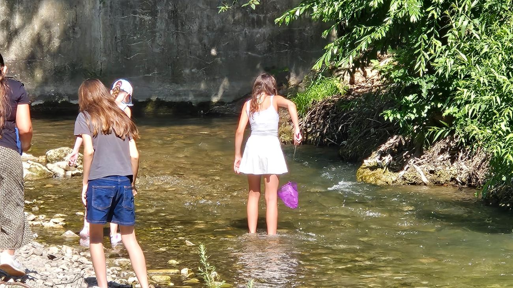
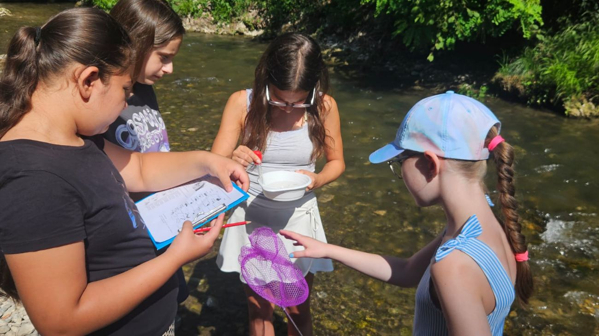
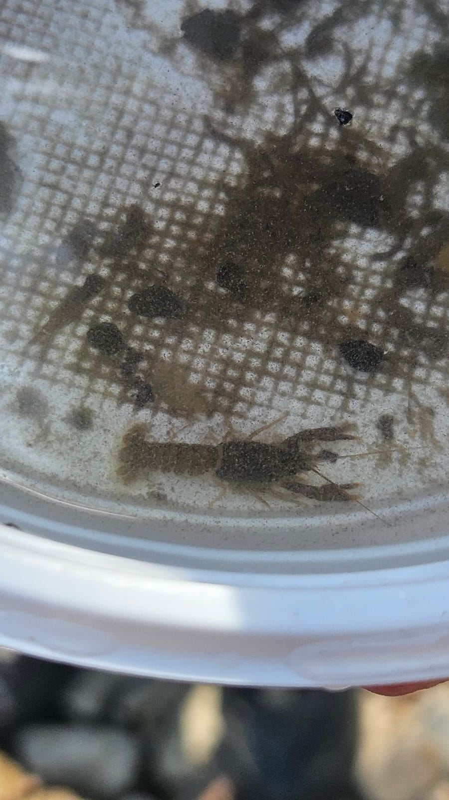
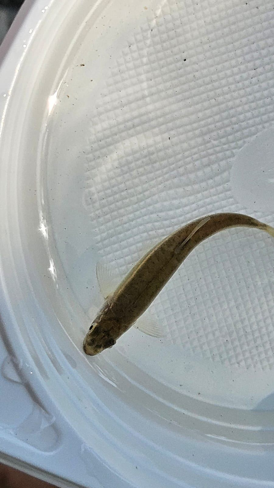
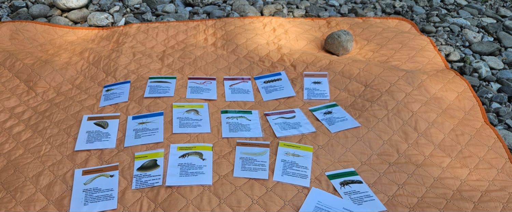
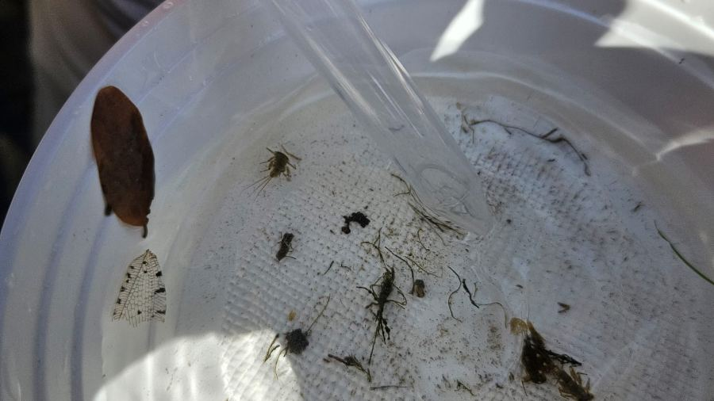
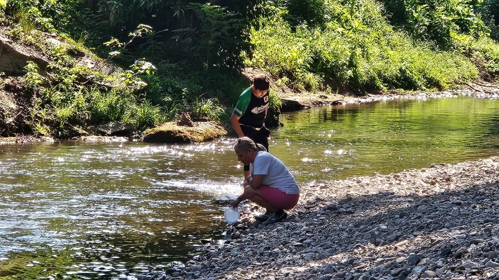

Nasse Füße, volle Kescher und jede Menge Entdeckerfreude: Beim Workshop „Flusswanderung" ging es für unsere Schülerinnen und Schüler direkt hinein in die Triesting — auf der Suche nach den kleinen Bewohnern des Flusses.
Mit Kescher und Sieb unterwegs
Barfuß oder mit alten Turnschuhen ging es für die Schülerinnen und Schüler direkt ins kühle Nass. Mit Keschern und feinen Sieben wurde vorsichtig zwischen Steinen, Kies und Strömung nach Kleinlebewesen gesucht — für viele der erste bewusste Blick unter die Wasseroberfläche eines heimischen Flusses.


Wer lebt eigentlich im Wasser?
Was im ersten Moment nach einer einfachen Becher-Ladung Wasser und Schlamm aussah, entpuppte sich bei genauerem Hinsehen als kleines Ökosystem: Köcherfliegenlarven, Eintagsfliegenlarven, ein Flusskrebs und sogar ein kleiner Fisch fanden sich in den Fangbehältern wieder.


Anschließend hieß es: bestimmen statt raten. Mit einem Bestimmungsschlüssel ordneten die Schülerinnen und Schüler ihre Funde konkreten Arten zu — anhand von Merkmalen wie Körperform, Beinpaaren oder charakteristischen Anhängen. Das ist mehr als ein nettes Naturerlebnis: Die gefundenen Kleinlebewesen gelten in der Gewässerökologie als Bioindikatoren — bestimmte Arten reagieren sehr empfindlich auf Wasserqualität und Sauerstoffgehalt und verraten so, wie gesund ein Gewässer tatsächlich ist.

Mit Bestimmungskarten wurden die gefundenen Kleintiere den passenden Arten zugeordnet.

„Ja, wir haben die Tierchen gesammelt, mit Hilfe eines Bestimmungsschlüssels identifiziert und natürlich wieder freigelassen."
Und wieder zurück ins Wasser
Nach dem genauen Beobachten und Bestimmen ging jedes Tier dorthin zurück, wo es hergekommen war: zurück in die Triesting. Denn Forschen heißt nicht nur genau hinsehen, sondern auch verantwortungsvoll mit dem umzugehen, was man findet.

Alle gesammelten Tiere wurden nach der Bestimmung wieder behutsam in die Triesting entlassen.
Ein gelungener Vormittag mit nassen Füßen, klugen Fragen und ganz viel Respekt vor dem, was direkt vor unserer Haustür im Wasser lebt.